Manual de utilização
Como usar o AVM SP
Baixar o manual em PDF Documento de orientação operacional, versão 7 · 13 páginas · 210 KB
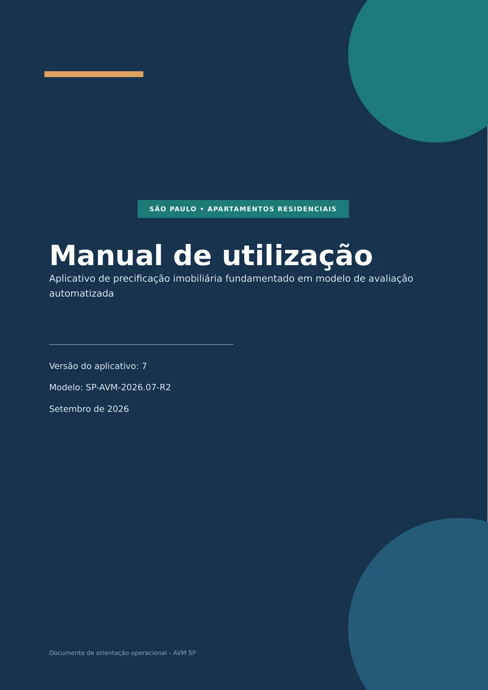
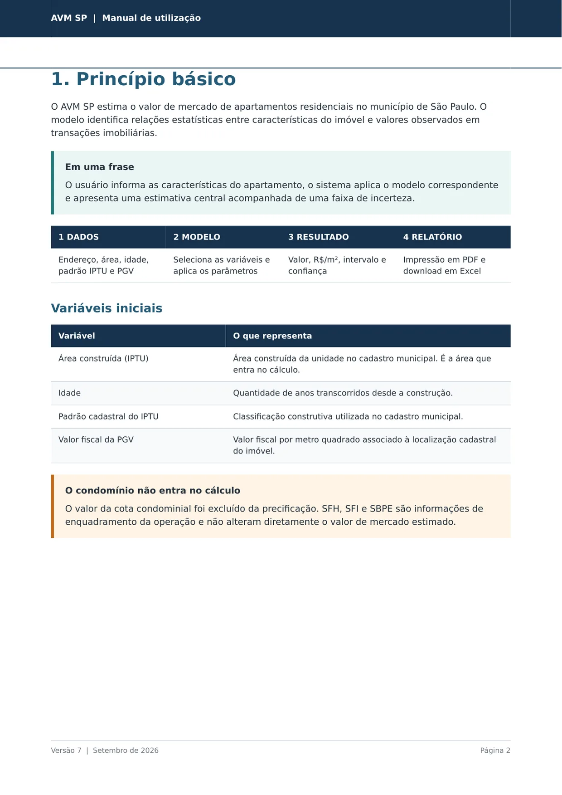
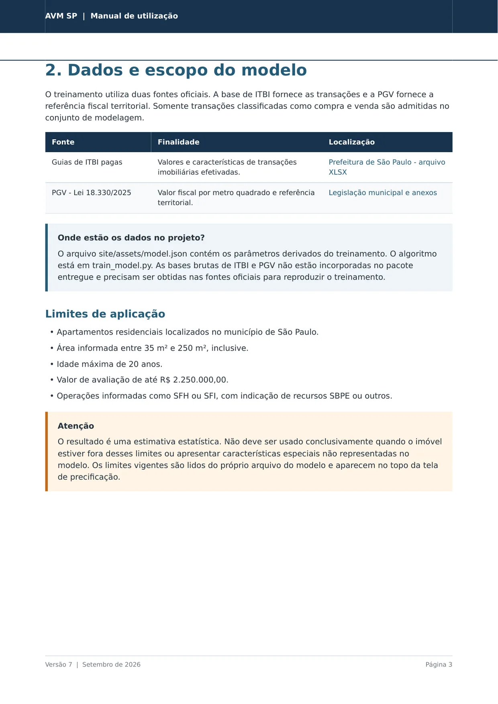
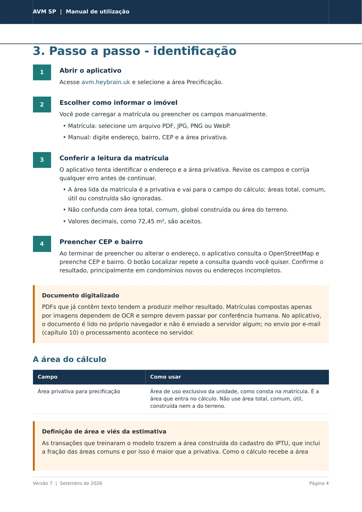
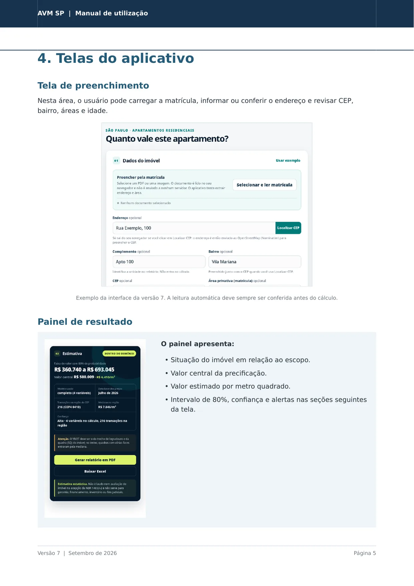
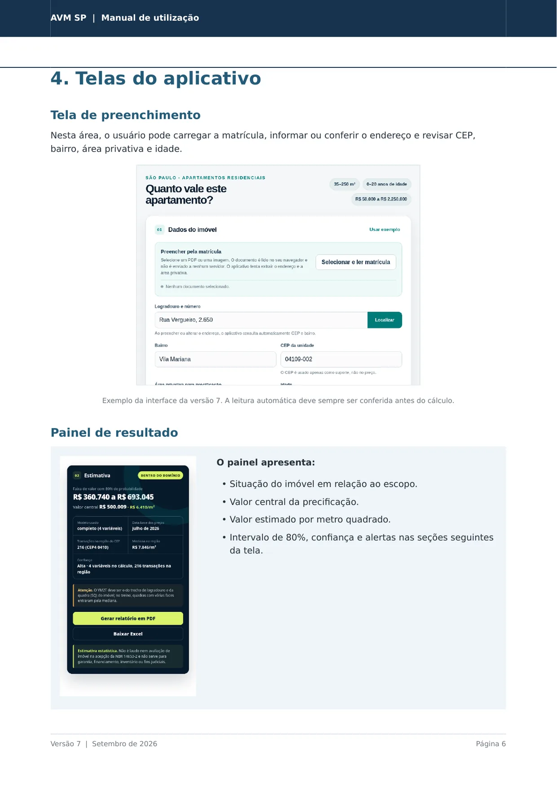
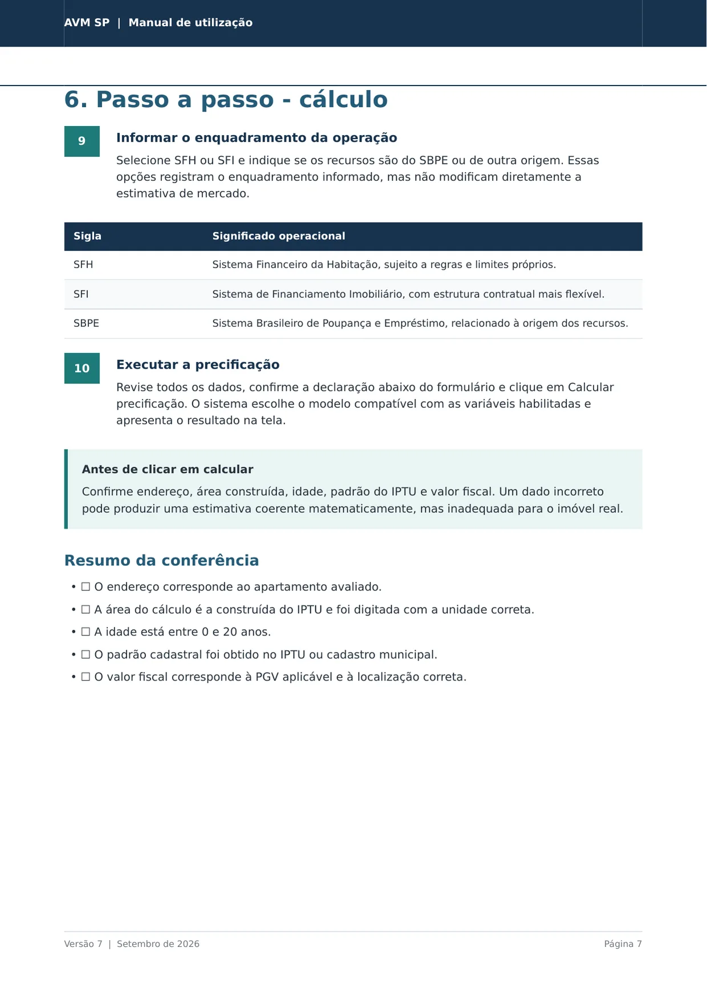
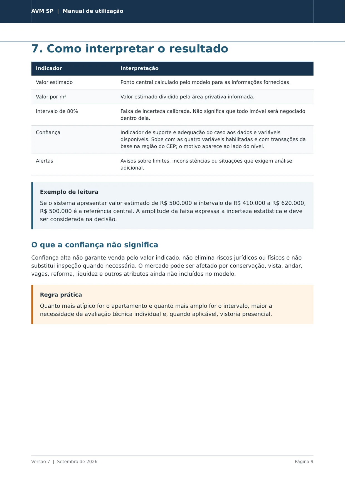
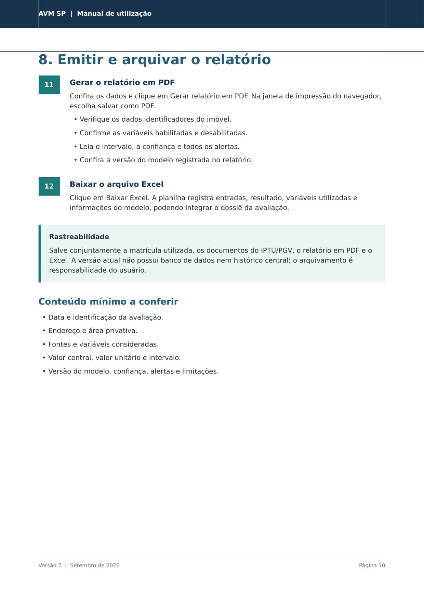
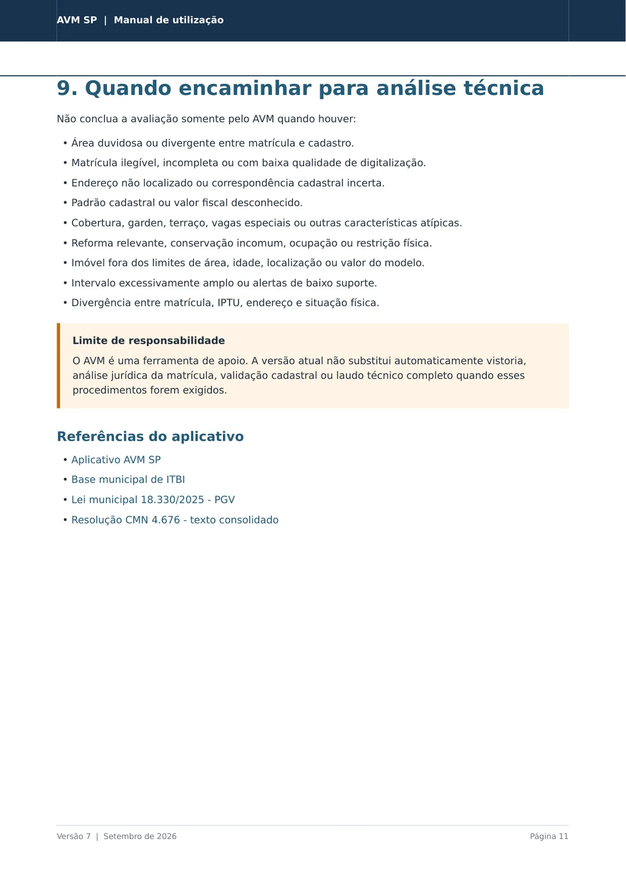
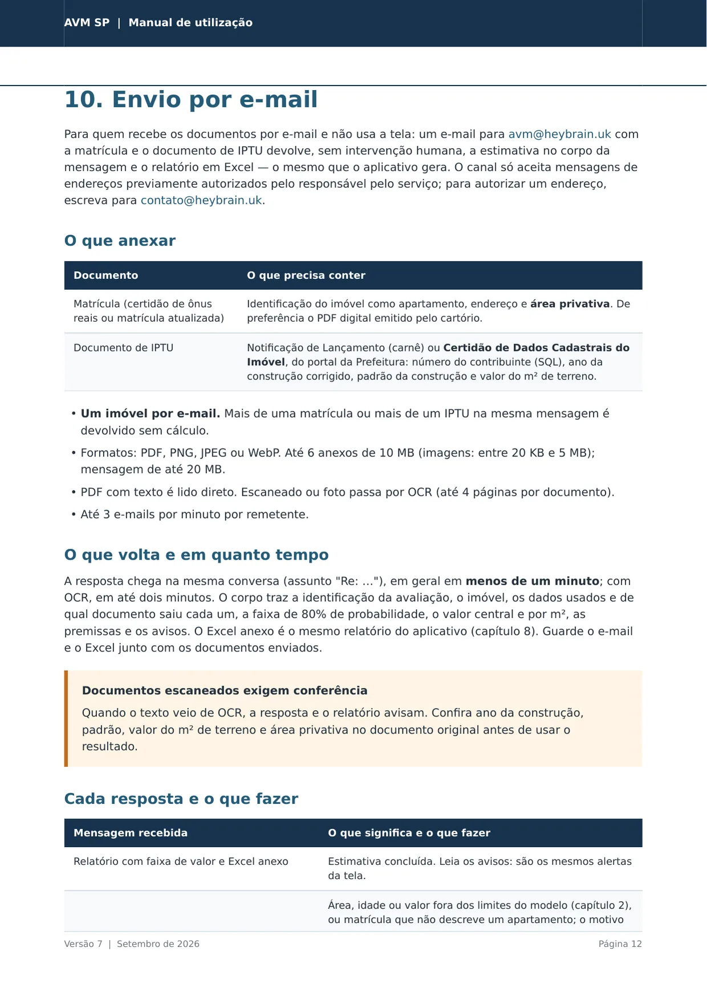
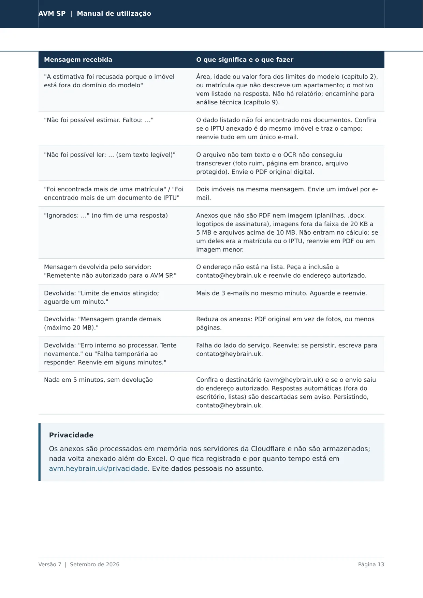
As páginas acima são o mesmo documento do botão de download. Navegadores de celular não exibem PDF dentro da página, por isso ele é mostrado como imagens.